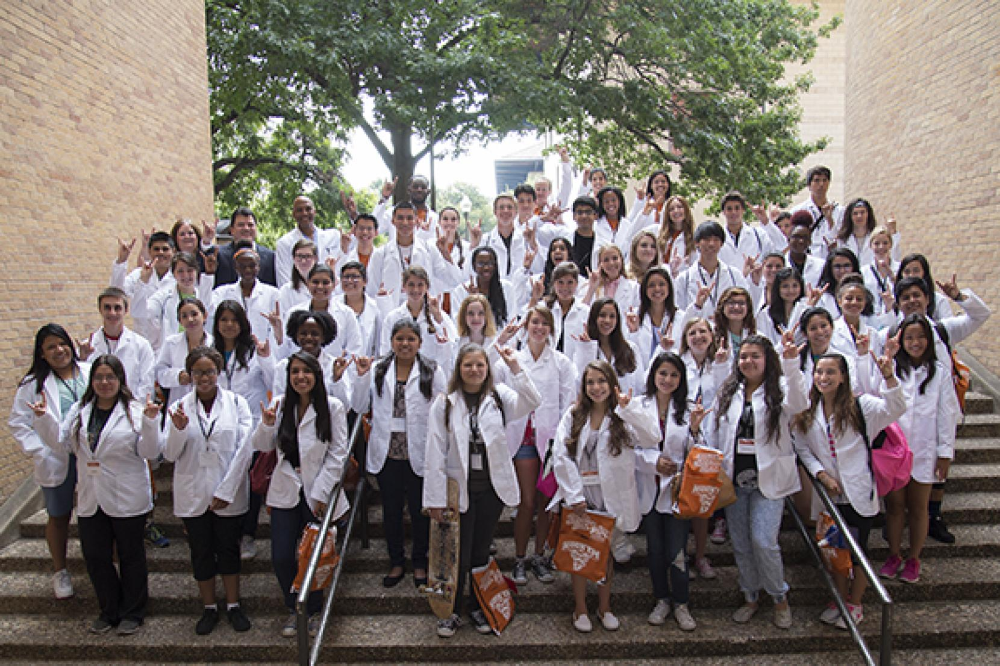
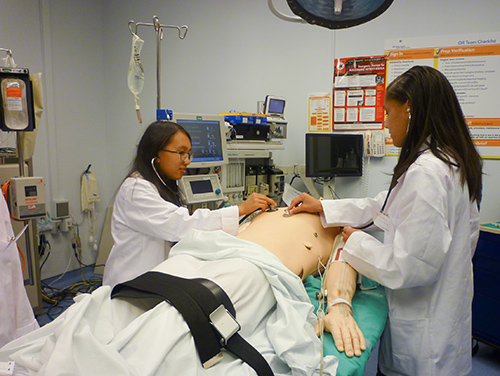

Medical Services

Even after decades of freedom, India is struggling to provide basic health services to its people. According to government sources, in India 45 children die every hour due to respiratory infections. 1 child dies every 2 minutes due to diarrhoea. And annually, about 2 million children under 5 years of age die due to preventable diseases.The situation calls for timely care and diagnosis which can reduce the incidence of morbidity and mortality especially among children and women.Smile Health Camps is one such special initiative of Smile Foundation to provide healthcare services to meet the immediate health care needs of the marginalized community in remote rural areas and slums through standalone camps. Customized health camps are organized extensively across the country offering comprehensive health services – curative, preventive, promotive and referral, to a large number of people in selected intervention areas.

Multi-disciplinary projects include gynaecological, paediatric, ophthalmology and surgical services etc., whereas other interventions can be general in nature. Duration of Smile Health Camps vary between one day and 15 days with frequencies ranging between a month and a year.The uniqueness of the model lies in its comprehensive approach where health promotion and prevention are given equal importance while curative care is administered.Many organizations and institutions like Canara Bank, Crompton Greaves, Jain Conference, Blackrock, Surf Excel, Rotary Club of Delhi South, Hindalco Industries Ltd., Lafarge India Pvt. Ltd., AIIMS & Red Cross Society, Association of Obstetrics and Gynecology Delhi, Lifeline Hospital, St. Martha Hospital, Vinayak Hospital, Fullerton and Ajay Memorial Foundation have associated with Smile Foundation to conduct Smile Health Camps successfully.